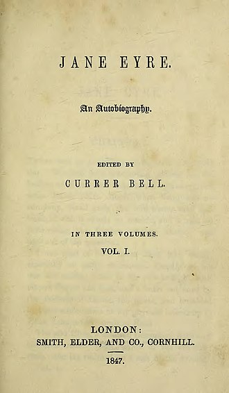
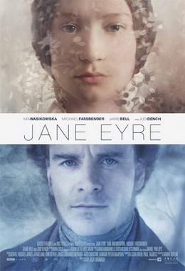

Charlotte Bronte (21 April 1816 - 31 March 1855) was an
English novelist and poet, the eldest of the three Bronte sisters who survived into adulthood and
whose novels became classics of English literature.
Although her first novel, The Professor, was rejected by publishers, her second novel, Jane Eyre,
was published in 1847. The sisters admitted to their Bell pseudonyms in 1848, and by the following
year were celebrated in London literary circles.
Charlotte Brontë was the last to die of all her siblings. She became pregnant shortly after her
marriage in June 1854 but died on 31 March 1855, almost certainly from hyperemesis gravidarum, a
complication of pregnancy which causes excessive nausea and vomiting.
JANE EYRE:

Title page of the first edition, 1847
Jane Eyre,originally published as Jane Eyre: An Autobiography, is a novel by the English
writer Charlotte Bronte. It was published under her pen name "Currer Bell" on 19 October 1847 by
Smith, Elder & Co. of London. The first American edition was published the following year by
Harper
& Brothers of New York. Jane Eyre is a Bildungsroman which follows the experiences of its
eponymous heroine, including her growth to adulthood and her love for Mr Rochester, the brooding
master of Thornfield Hall.
FILM ADAPTATION:

British cinema poster
The most recent film adaptation, Jane Eyre, was released in 2011, directed by Cary Joji Fukunaga, and
starred Mia Wasikowska as Jane Eyre and Michael Fassbender as Mr. Rochester. The film, actors, and
costume design team were nominated and won various awards from 2011-2012.
Charlotte Bronte does not give any specific years in the novel but there are clues to the period when it is
set. These clues and an estimated timeline are shown on this page.
The year number next to the date is the relative year (with 1 being the start of the novel). The actual years
are based on the publication of Marmion, (see below) but bear in mind that this is only an assumption and
Charlotte's chronology may have been different.